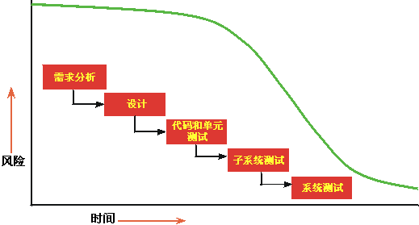

| 迭代开发 |
 |
|
什么是迭代开发？?使用迭代开发的项目的生命周期由几个迭代组成。根据迭代在开发周期中所处的位置，迭代分不同比例包括了业务建模、需求、分析与设计、实施、测试和部署中的一组松散连续的任务。先启和精化阶段中的迭代侧重于管理、需求和设计活动；构造阶段中的迭代侧重于设计、实施和测试；而移交阶段中的迭代侧重于测试和部署。迭代应以限定时间的方式进行管理，即迭代的进度安排应视为固定的，而迭代内容的范围按照该进度安排进行积极管理。 为什么迭代开发？?初始设计可能在其主要需求方面有所缺陷。 如果在以后发现设计缺陷，则会导致严重的浪费，某些情况下甚至会导致取消项目。 所有项目都会涉及到一组风险。如果能在生命周期中越早确认避免了风险，就可以越精确地制定计划。许多风险甚至是在您已尝试集成系统时才发现的。无论开发团队多么富有经验，您都无法预测到所有风险。  在瀑布式生命周期中，直到生命周期后期，您才能确认是否已经清除了风险。
在迭代式生命周期中，您根据主要风险列表选择要在一次迭代中扩展的增量。由于迭代生成测试过的可执行文件，您可以确认是否已经降低了目标风险。 迭代法的优点迭代法通常因为许多不同的原因而优于线性法或瀑布法。
一位客户曾经说：“使用瀑布法，直到项目接近结束，有时甚至直到集成进行了一半，一切看起来都不错。 然后一切化为乌有。如果使用迭代法，就很难将真相隐藏很长时间。” 项目经理通常抵制迭代法，将其视为无尽的删改。在 Rational Unified Process 中，这种交互式方法得到很好的控制；迭代的数目、持续时间和目标都是有计划的。参与者的任务和职责是确定的。 可以获取目标进度测评。有些返工是在一个迭代到下一个迭代之间进行的，但这也得到了小心地控制。 降低风险迭代法使您可以较早地降低风险，因为许多风险在集成期间才会遇到和发现。当您展开早期迭代时，您检查了所有规程，练习项目的许多方面：工具、开包即用软件、人员技能等等。 感觉到的风险可能证明并不是风险，而新的、未被怀疑过的风险却会出现。 集成并不是最终的一次“大决战”－ 元素是逐渐被合并的。 事实上，迭代法差不多是一种持续集成。它过去是长期、不确定而困难的（在项目结束时占用整个工作量的 40%），而且难以精确计划，现在被划分为六到九个较小的集成工作，它们起初要集成的元素少得多。 适应变化迭代法使您可以考虑到不断变化的需求，因为正常情况下这些需求将一直变化。 需求的变化以及需求“麻烦”一直是项目问题的主要源由，将导致延迟交付、错过进度安排、客户不满意和开发人员受到打击。 二十五年前，Fred Brooks 写到：“先打算好舍弃一条路吧，因为您总归要舍弃的。”用户将一直改变他们的想法。这是人的本性。强迫用户如他们起初设想的那样接受系统是错误的。他们因为环境变化而改变主意 － 他们对环境和技术了解更多，并且他们在产品还在开发时就看到了中间阶段的演示版。 迭代生命周期使管理层可设法对产品进行战略性更改。例如，要与现有产品竞争，您可能决定要在竞争对手行动之前发行一款减少功能的产品，或者可能采用另一家供应商的给定技术。 迭代还允许一直进行技术变更。如果某项技术有变化或在新技术出现时成为标准，项目则可以利用它。平台变化和较低层基础结构变化时尤其如此。 实现更高质量因为错误是在若干迭代中得以纠正的，所以迭代法可以生成更强健的体系结构。早期缺陷会在产品完善的早期被检测出来。这样可以发现并减少性能瓶颈，而不是在临近交付时才发现。 迭代开发（而不是在项目结束时一次性运行测试）可以生成经过更全面测试的产品。通过几次迭代，就有较大可能对关键功能进行测试，而测试本身（以及任何测试软件）有时间进行完善。 学习与改进开发人员可以一直学习，在整个生命周期更充分地利用各种技能和专门技术。 测试人员不为仅仅制定计划和提高技能而等待很长时间，而是及早开始测试，技术文档也可以及早开始编写，等等。可以在早期迭代评估复审中检测出额外培训或外部帮助的需要。 流程本身可以在其发展时得到改进和优化。迭代结束时的评估不仅从产品时间安排表的角度查看项目状态，而且分析组织和流程中所需要的更改以在下一次迭代中更好地执行。 增加重用迭代式生命周期促进了重用。与必须提前识别所有公共部件相比，部分设计或实施的公共部件更容易识别。 识别和开发重用型部件是困难的。早期迭代中的设计复审允许软件设计人员识别未受质疑的潜在重用，而后续迭代允许他们开发和完善该公用代码。 使用了迭代法，就更容易利用商业性开包即用产品。您可以通过几次迭代来选择它们、集成它们，并验证它们适合该体系结构。 |
© Copyright IBM Corp. 1987, 2006. All Rights Reserved. |